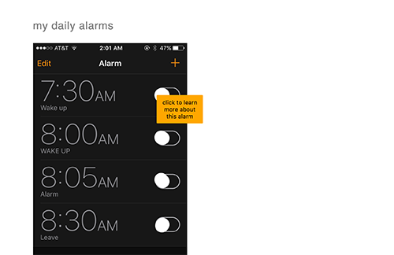
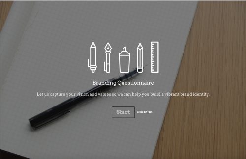
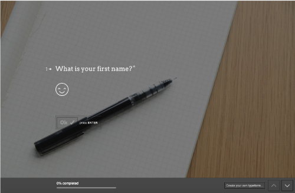
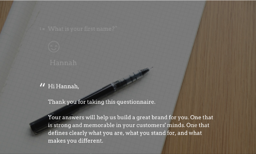
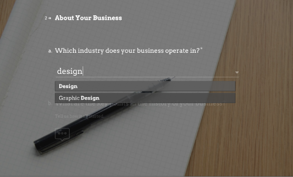
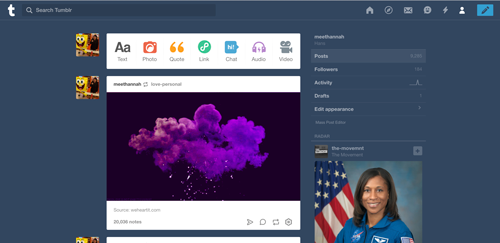

Chapter 3: Billboard Design 101
In this chapter, Krug discusses the importance of visual hierarchy — making sure users understand how to navigate elements on a webpage and focus on the right information. There are six guidelines for an effective web usability: take advantage of conventions, create effective visual hierarchies, break pages up into clearly defined areas, make it obvious what’s clickable, eliminate distractions, and format content to support scanning.
Existing conventions, or widely used or standardized design patterns, will help the user navigate easier because they are already familiar with the convention and how it functions. For web interfaces, conventions have evolved over time but the expectations for a web page stays the same. This allows users to intuitively understand the standard functions of a website, such as the scroll bar or the buttons on a navigation bar. However, designers tend to not take advantage of conventions because they want to be innovative. This is risky because if the innovation is too different it creates a more complicated and confusing site. Krug gives the advice to “innovate when you know you have a better idea, but take advantage of conventions when you don’t”.
Along with keeping a page familiar enough so a user won’t get confused, making sure there’s visual hierarchy is another important factor. Placing more important information at the top of a page, with bigger or bolder font is a way to separate the important information from the rest. Grouping similar elements together on a page allows users to know what goes together and helps to guide the user. Visual hierarchy allows users to know where they want to look, and where they want to ignore. Making sure the page is organized, not stuffed with too much information, and formatting text to make it easier to understand creates a clear and not-confusing interface.
A real-life example of a website with excellent visual hierarchy and beautiful design is Jenny Johannesson's Portfoliowho is a Senior Designer at Ueno. Each page clearly states what the project is by displaying the titles with the main typeface, as well as a short blurb in a smaller, serif typeface and accompanying images. The main page features some innovation, but includes tiny conventions, such as the magenta line to indicate the user to scroll down.
Focusing on creating effective visual hierarchies and understanding when to innovate and when to stick to conventions allows for an easier website for a user to scan, and not have to stress or get confused when trying to find what they need. Though websites the latest web trends continue to evolve, it is best to try to stick to conventions to make sure your content can be intuitive and users can decide “what to focus on and what to ignore”.
For studio 4, I wanted to create a glimpse into my iPhone alarms that wake me up in the morning. If I had more time, I would've included more alarms to show the interesting aspects of my day. For this page, the user clicks or hovers on an alarm to reveal why I set that alarm. I wanted to create the interface to feel as if they are using the alarm application on my iPhone. I originally wanted the alarm ringtone to start playing when the user clicks on an alarm, but decided to have it play only once when the page loads. I wanted it to be a simple yet inviting time-based experience.
A web-based form that I used often is typeform.
Forms are generally simple, boring, and to the point. It requires constant tapping of the tab key to get to the next field, and it is a monotonous task. Typeform makes filling out a form interesting and aesthetically pleasing. The interface is modern and easy to use. It shows you one field at a time, and goes on to the next field by easily pressing "enter". It allows the user to put less effort in, and makes it less yawn-inducing. I enjoy filling out forms because Typeform makes it fun, and something nice to look at.
   A user interface that I use quite often is pretty well-known: Tumblr.com. I use Tumblr to pass the time, gather ideas on aesthetics, and blog out my emotions. Ever since I started using Tumblr in middle school, I’ve navigated the website with ease. Tumblr features endless scrolling and a like / reblog button; these features encompass a fairly simple interface. Though it has changed over the years, the interface has become even more friendly. A large “toolbar” sits at the top of the page, allowing the user to easily create a new text post, or post a photo, quote, video, etc. Much of what you can do on Tumblr is available to you on your account’s dashboard. This creates a more personable interface -- it feels like your own online journal complete with a carefully chosen feed and unique posts. The visual design of Tumblr displays the familiar flat design and iconic “Tumblr blue”. Icons, slight variations of the “Tumblr blue”, and sans-serif fonts create a simple yet still modern web design. All these characteristics tie together to create an aesthetic and time consuming user interface that has lasted through the ages.
